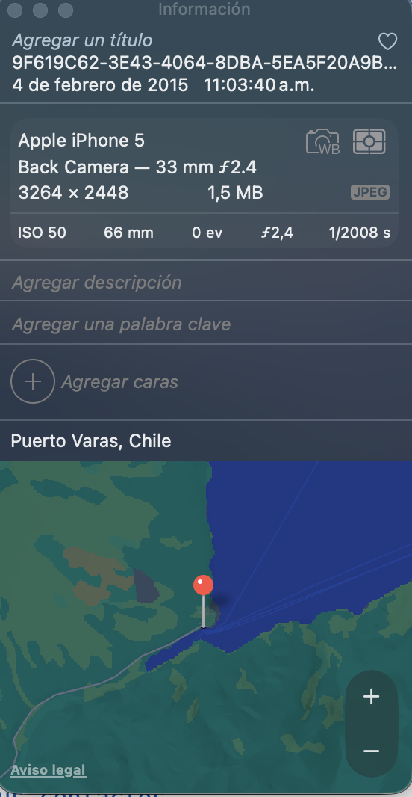

Privacidad y Datos Personales en la Era Digital#
Pregunta para reflexionar
¿Qué son los Datos Personales?#
Datos personales son cualquier información que puede identificarte directa o indirectamente como individuo.
Tipos de datos personales:#
1. Datos de Identificación Básica#
Nombre completo.
RUT/DNI.
Fecha de nacimiento
Dirección
Número de teléfono
Email
2. Datos Biométricos#
Huella dactilar
Reconocimiento facial
Reconocimiento de iris
Voz
Patrón de escritura
3. Datos de Comportamiento Digital#
Historial de navegación
Apps que usas
Tiempo en cada app
Ubicación GPS
Contactos frecuentes
Patrones de sueños (smartwatch)
4. Datos Sensibles#
Estado de salud
Orientación sexual
Creencias religiosas
Opiniones políticas
Origen étnico
Datos financieros
¿Quién Tiene Tus Datos?#
Empresas de Tecnología#
Empresa |
Datos que recolecta |
|---|---|
Búsquedas, ubicación, correos (Gmail), videos vistos (YouTube), contactos, calendario |
|
Meta(Facebook/Instagram/WhatsApp) |
Fotos, mensajes, likes, amigos, ubicaciones, compras |
TikTok |
Videos vistos, tiempo en app, interacciones, datos del dispositivo |
Apple |
Apps usadas, compras, ubicación, salud (Apple Watch) |
Amazon |
Compras, búsquedas de productos, historial de visualización |
Otros que tienen tus datos:#
🏪 Supermercados: tarjetas de puntos o historial de compras.
🏥 Centros médicos: datos personales, historial de salud.
🏫 Colegio/Universidad: notas, asistencia, datos personales.
🏦 Bancos; datos personales,transacciones, gastos, compras.
🚗 Apps de transporte: Uber, DIDI, etc: datos personales, historial de viajes, frecuencia de lugares.
📱 Operadoras Móviles: datos personales, historial de llamadas.
"Vivimos en la edad del algoritmo. Las decisiones que afectan nuestras vidas no están hechas por humanos, sino por modelos matemáticos"
Cathy O´ Neal (2016)
¿Cómo Recolectan Tus Datos?#
1. Que tú les das voluntariamente#
Cada vez que llenas un formulario:
“nombre”: “Tu nombre”,
“email”: “tu@email.com”,
“telefono”: “+56 9 XXXX XXXX”,
“fecha_nacimiento”: “DD/MM/AAAA”,
Y aceptas los “Términos y Condiciones” sin leer…
3. Metadatos de fotos#
Cada foto de tu celular contiene:
📍 Ubicación GPS exacta
📅 Fecha y hora
📱 Modelo de teléfono
⚙️ Configuración de cámara
Información oculta en una foto. Cualquiera puede ver esto si no los eliminas al subirlo.

4. Permisos de aplicaciones#
Cuando instalas una app y aceptas:
📍 Ubicación: Saben dónde estás siempre
📷 Cámara: Pueden tomar fotos
🎤 Micrófono: Pueden grabar audio
📞 Contactos: Ven todos tus contactos
📁 Archivos: Acceso a tus fotos y documentos
Contactos
Ubicación
Cámara
Micrófono
¿Por qué una linterna necesita tus contactos? 🚩
Al enfrentarnos al uso de datos y tecnologías de IA, es esencial que nos recordemos las preguntas que nos permitan incorporar una dimensión ética a nuestras soluciones: ¿Qué es aceptable o no en la recopilación de datos personales con/sin consentimiento previo? ¿En qué medida mis datos de entrenamiento favorecen el sesgo o la discriminación? ¿Cómo la toma de decisiones automatizada mantiene exclusiones históricas? ¿Cuánto de transparencia o de opacidad algorítmica tienen las soluciones que diseño? ¿Hasta qué punto mi solución afecta la autonomía de las personas y termina manipulando su capacidad de elegir frente a productos o procesos políticos?Claudio Rojas. Discurso de Graduación MACI-UDEC 2024
El Negocio de Tus Datos#
¿Cuánto valen tus datos?#
Información |
Precio Promedio en la Dark Web |
|---|---|
Datos de Tarjeta de Crédito |
10 - 240 USD |
Licencia de Conducir |
150 USD |
Pasaporte Estadounidense |
50 USD |
Detalles de la cuenta bancaria |
30 - 4.255 USD |
Credenciales de inicio de sesión de Cash App |
860 USD |
Detalles de la cuenta criptográfica |
20 - 2650 USD |
Cuenta de redes sociales hackeada |
60 USD |
Cuenta de Gmail hackeada |
860 USD |
Credenciales de inicio de sesión del servicio de streaming |
1 - 20 USD |
¿Cómo ganan dinero con tus datos?#
1. Publicidad dirigida#
Perfil que las empresas crean de ti
tu_perfil_publicitario:
“edad”: 16,
“genero”: “masculino”,
“intereses”: [“videojuegos”, “historia”, “tecnología”],
“poder_adquisitivo”: “medio-bajo”,
“ubicacion”: “Puerto Montt, Chile”,
“dispositivos”: [“iPhone”, “laptop”],
“hora_activo”: “20:00 - 23:00”,
“probabilidad_compra”: 0.65 # 65% de chance de comprar
Anunciantes pagan por mostrarte publicidad específica:
precio_mostrarte_anuncio = calcular_valor(tu_perfil_publicitario)
2. Venta a terceros: Data Brokers#
Brokers de datos (Data Brokers): “Son empresas que buscan recabar información personal sobre los usuarios. Estos tienen una identidad digital, tienen una historia, su navegación está sectorizada. Y otras empresas se ven muy beneficiadas cuando compran esta información”. Fuente
Crean perfiles detallados de millones de personas, pero a medida de lo solicitado por sus clientes.
Venden a empresas, gobiernos, investigadores
3. Investigación y desarrollo#
Entrenar algoritmos de IA
Mejorar productos
Predecir tendencias
Riesgos de la Falta de Privacidad#
1. Robo de identidad#
Con suficientes datos personales, alguien puede:
Abrir cuentas bancarias a tu nombre
Solicitar créditos
Cometer fraudes
Suplantarte en redes sociales
2. Discriminación algorítmica#
Rechazo de créditos por tu código postal
Precios más altos según tu perfil
Exclusión de oportunidades laborales
3. Vigilancia y control#
Gobiernos autoritarios usan datos para perseguir disidentes
Empresas monitorean empleados 24/7
Pérdida de libertades individuales
4. Manipulación psicológica#
Caso: Cambridge Analytica (2018)
Qué pasó:
Recolectaron datos de 87 millones de usuarios de Facebook sin su consentimiento.
Usaron datos para influenciar elecciones (Brexit, Trump 2016)
Cómo:
Perfiles psicológicos basados en likes
Publicidad micro-dirigida
Mensajes personalizados para manipular votos
Resultado:
Multa de $5 mil millones a Facebook
Nuevas regulaciones en todo el mundo
Legislación Sobre Privacidad#
Internacional#
GDPR (Europa - 2018)#
La ley de privacidad más estricta del mundo:
✅ Derecho a saber qué datos tienen de ti
✅ Derecho a corregir datos incorrectos
✅ Derecho a eliminar tus datos (“derecho al olvido”)
✅ Derecho a portabilidad (llevar datos a otra empresa)
✅ Consentimiento explícito para recolectar datos
⚖️ Multas de hasta 4% de ingresos globales
CCPA (California, EE.UU. - 2020)#
Similar al GDPR pero menos estricta
Derecho a saber qué venden de tus datos
Derecho a decir “no” a la venta
Chile#
Ley N° 19.628 sobre Protección de Datos Personales (1999)#
Problemas:
❌ Desactualizada (de antes de las redes sociales)
❌ Sanciones muy bajas
❌ Difícil de hacer cumplir
❌ No cubre todos los tipos de datos modernos
Ley N° 21.719 sobre Protección de Datos Personales (2024) - VIGENTE#
Promulgada: Mayo 2024 En vigencia desde: Gradual - plena vigencia en 2026
Principales cambios:
✅ Se alinea con estándares internacionales (GDPR).
✅ Crea la Agencia de Protección de Datos Personales
✅ Sanciones reales y significativas.
✅ Derechos ampliados de los ciudadanos.
✅ Mayor responsabilidad para las empresas.
La Ley 21.719 protege especialmente:
🏥 Datos de salud.
💳 Datos financieros.
🧬 Datos biométricos.
🗳️ Opiniones políticas.
⛪ Creencias religiosas.
🏳️🌈 Orientación sexual.
👥 Datos de niños y adolescentes.
“... los algoritmos que procesan datos de rendimiento académico, asistencia, comportamiento o incluso salud mental pueden vulnerar la confidencialidad si no existen mecanismos robustos de anonimización, consentimiento informado y auditoría externa. Mas, el límite no está dado solo por lo técnico, sino por consideraciones éticas más amplias: el respeto por la dignidad estudiantil, la protección de poblaciones vulnerables y la promoción de un entorno educativo donde la confianza institucional no se vea erosionada por prácticas opacas de vigilancia o perfilamiento algorítmico”.
Gabriela Arriagada-Bruneau Fuente
Cómo Proteger Tu Privacidad#
3. En tu Teléfono:#
Checklist de Configuración de privacidad segura en tu móvil:
a) “Ubicación”:
“activar_solo_cuando_usas_app”: True,
“ubicacion_precisa”: False, # Usar aproximada
desactivar_en_fotos”: True
b) “Permisos Apps”:
“revisar_periodicamente”: True,
“revocar_innecesarios”: True,
“microfono”: “solo_mientras_uso_app”,
“camara”: “solo_mientras_uso_app”
c) “Publicidad”:
“limitar_rastreo”: True,
“desactivar_ads_personalizados”: True
Pasos prácticos:
En iPhone:
Ajustes → Privacidad y seguridad
Revisar cada app
Cambiar permisos a “Preguntar la próxima vez” o “Nunca”
En Android:
Configuración → Privacidad
Administrador de permisos
Revisar y revocar permisos innecesarios
4. Contraseñas Seguras:#
123456
12345678
123456789
admin
1234
Aa123456
12345
password
123
1234567890
Cómo crear contraseñas seguras:#
Contraseña Débil o Errónea: contraseña_mala = “juanito123” # ❌ Fácil de adivinar
Contraseña Segura: contraseña_buena = “C0n-3l_V!ent0_4_m1s_Esp@ld4s” # ✅
Basada en frase: “Con el viento a mis espaldas”
Apoyada en números y símbolos
Usa un gestor de contraseñas:
1Password
Bitwarden (gratis y de código abierto)
LastPass
5. Autenticación de Dos Factores (2FA): ¿Qué es 2FA?#
Añade una segunda capa de seguridad:
Algo que sabes (contraseña)
Algo que tienes (código en tu celular)
Incluso si roban tu contraseña, no pueden entrar sin tu teléfono.
Activa 2FA en:
Email
Redes sociales
Banco
Apps de almacenamiento (Google Drive, iCloud)
6. VPN (Red Privada Virtual): ¿Qué hace una VPN?#
Oculta tu dirección IP
Encripta tu tráfico de internet
Protege en WiFi públicas
Permite acceder a contenido geo-bloqueado
VPNs recomendadas:
ProtonVPN (gratis y confiable)
NordVPN (paga)
Mullvad (máxima privacidad)
7. Correo Temporal:#
Para registrarte en sitios no confiables:
Temp Mail
Guerrilla Mail
10 Minute Mail
Evita dar tu email real a sitios sospechosos.
Actividad Práctica#
Parte 1: Descubre qué sabe Google de ti
Inicia sesión
Explora:
Historial de búsquedas
Historial de YouTube
Historial de ubicaciones
Actividad de voz
Parte 2: Facebook
Ve a Configuración → Tu información de Facebook
Descarga tu información
Revisa qué datos tienen
Parte 3: Reflexión
¿Te sorprendió algo?
¿Qué datos no sabías que tenían?
¿Qué vas a cambiar?
Entrega: Documento con capturas y reflexión (1 página)
Consejos Finales#
Si es gratis, TÚ eres el producto
Lee los términos y condiciones (o al menos las partes de privacidad)
Menos es más - comparte solo lo necesario
Pregúntate: ¿Realmente necesito esta app?
Actualiza todo - software desactualizado = vulnerabilidades
Usa sentido común - si algo parece sospechoso, probablemente lo es
Educa a tu familia - especialmente a niños y adultos mayores
Recursos para Profundizar#
Sitio: Privacy Tools (privacytools.io)
Documental: “The Great Hack”
Libro: “Permanent Record” - Edward Snowden
Organización: Electronic Frontier Foundation (EFF)
Podcast: “Privacy, Security, & OSINT” - Michael Bazzell
Película: Brexit